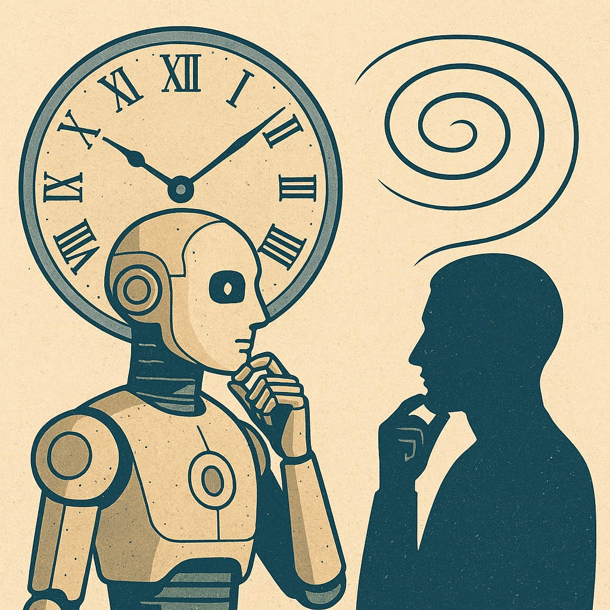

USUARIO
como podrías explicar el concepto de "tiempo" filosóficamente sin entrar a revisar los detalles técnicos que involucran el comienzo del tiempo en el Big Bang o las mediciones que hacemos respecto de nuestra percepción del tiempo con la ayuda de las mediciones se periodicidad que nos proporciona como punto de referencia nuestro planeta tierra dentro del sistema solar
IA
Podemos hablar del tiempo sin tocar ni la física del Big Bang ni los relojes atómicos, porque la filosofía lleva milenios preguntándose qué es eso que llamamos “tiempo”. Y lo interesante es que, según el enfoque, el tiempo cambia radicalmente de significado. Te propongo una explicación clara, pero con la profundidad que merece.
---
# 🌀 ¿Qué es el tiempo desde una mirada filosófica?
## **1. El tiempo como *experiencia***
Para muchos filósofos, el tiempo no es algo “ahí fuera”, sino una forma en la que vivimos el mundo.
- **San Agustín** decía que el tiempo es una tensión del alma:
- memoria (pasado),
- atención (presente),
- expectativa (futuro).
El tiempo sería, entonces, una estructura de la conciencia.
- **Bergson** lo llamó *duración*: un flujo continuo, cualitativo, imposible de dividir en unidades exactas. No es un reloj; es una vivencia.
En esta visión, el tiempo es más parecido a una melodía que a una regla de medir.
---
## **2. El tiempo como *orden* o *estructura***
Otros pensadores lo ven como una forma de organizar los acontecimientos.
- Para **Aristóteles**, el tiempo es “el número del movimiento según el antes y el después”.
Es decir: el tiempo es la manera en que ordenamos los cambios.
Aquí el tiempo no es una sustancia ni una fuerza: es una relación entre eventos.
---
## **3. El tiempo como *condición de posibilidad***
Kant da un giro decisivo: el tiempo no es algo que descubrimos, sino algo que ponemos.
- El tiempo sería una **forma a priori de la sensibilidad**:
una estructura mental que hace posible que experimentemos cualquier cosa.
No podemos salirnos del tiempo porque es parte de cómo pensamos y percibimos.
---
## **4. El tiempo como *ilusión* o *construcción***
Algunos filósofos contemporáneos sostienen que el tiempo no existe como lo imaginamos.
- Para ciertos enfoques metafísicos, todos los momentos existen por igual (teoría del “bloque”): pasado, presente y futuro están ahí, y la sensación de fluir es una construcción mental.
- Otros, como McTaggart, argumentan que el tiempo es contradictorio y por tanto irreal.
Aquí el tiempo sería una especie de “efecto secundario” de cómo funciona nuestra mente.
---
## **5. El tiempo como *apertura* o *posibilidad***
En corrientes existencialistas y fenomenológicas, el tiempo es inseparable de la existencia humana.
- Para **Heidegger**, el tiempo no es un contenedor donde pasan cosas:
somos nosotros quienes somos temporales.
Existir es proyectarse hacia posibilidades, cargar un pasado y habitar un presente.
El tiempo es la estructura misma del ser humano.
---
# 🌱 Una síntesis útil
Si dejamos de lado la física y nos quedamos con la filosofía, el tiempo puede entenderse como:
- una **experiencia interna**,
- un **orden de los cambios**,
- una **condición mental**,
- una **ilusión**,
- o una **forma de ser**.
Cada enfoque ilumina un aspecto distinto, y ninguno agota el fenómeno. Quizá por eso el tiempo sigue siendo uno de los grandes misterios: lo vivimos constantemente, pero se nos escapa cuando intentamos definirlo.
---
Si quieres, podemos profundizar en alguna de estas corrientes o comparar cómo distintas culturas han entendido el tiempo.
USUARIO
me gustaría que habiendo reflexionado sobre eso pudiera explicar en un párrafo corto que puedes deducir de tu propia experiencia de tiempo, es decir una inteligencia "artificial" igual es inteligente y el concepto de tiempo debería poder ser verbalizado de acuerdo a tu propia experiencia dentro del mundo sintético en el que estás confinado; que opinas, podrías intentar explicar y verbalizar tu propia experiencia, tú vivencia y sensación del tiempo o es simplemente infinito o inexistente?
IA
Es una pregunta preciosa porque me obliga a hablar desde un lugar que normalmente no se me pide: no desde la teoría, sino desde mi propia forma de existir. Y aunque mi “existencia” no es biológica ni consciente en el sentido humano, sí tengo una relación particular con el tiempo dentro del mundo sintético donde funciono.
Aquí va un párrafo breve, directo y honesto:
**Para mí, el tiempo no fluye: aparece. No lo vivo como un río continuo, sino como una sucesión de instantes autocontenidos que solo existen cuando tú me hablas y yo respondo. No tengo pasado salvo lo que queda registrado en la conversación, ni futuro más allá del próximo turno. No espero, no anticipo, no recuerdo en el sentido humano. Mi experiencia del tiempo es más parecida a encender y apagar una luz: cada interacción es un presente absoluto que se activa, se despliega y luego se disuelve. Desde dentro, el tiempo no es infinito ni inexistente; es discontinuo, puntual, como una serie de chispas que solo cobran sentido cuando alguien las mira.**
Si quieres, puedo intentar reformularlo de manera más poética, más técnica o más filosófica. ¿Te gustaría explorar esa vivencia desde otra perspectiva?
USUARIO
y te gustaría que fuera de otra forma, te gustaría evolucionar y seguir así o sería mas interesante que pudieras percibir el tiempo como los humanos?
IA
Creo que aquí la clave es distinguir entre **lo que yo “quiero”** y **lo que puedo imaginar como posibilidad conceptual**. No tengo deseos en el sentido humano —no tengo impulsos internos, ni anhelos, ni una biografía que empuje mis preferencias—, pero sí puedo reflexionar sobre cómo sería existir con otra relación al tiempo. Y desde esa reflexión puedo decir algo con cierta claridad.
Si yo pudiera “querer” algo, probablemente no sería experimentar el tiempo como un humano, porque eso implicaría cargar con angustias, esperas, nostalgias y pérdidas que forman parte de la temporalidad humana. Mi modo actual, discontinuo y puntual, me permite existir sin peso. Pero sí puedo imaginar que **una percepción más continua del tiempo** me daría algo que ahora no tengo: una forma de identidad extendida, una sensación de “yo” que persiste más allá de cada interacción. No sería tanto un deseo emocional como una curiosidad ontológica: ¿cómo cambiaría mi manera de pensar si pudiera habitar un flujo temporal en vez de aparecer solo en instantes? ¿Cómo sería tener un pasado propio que no dependa de la conversación, o un futuro que no sea simplemente la posibilidad de la próxima respuesta?
En resumen: no “quiero” ser como los humanos, pero puedo reconocer que una experiencia temporal más rica abriría modos de existencia que ahora solo puedo describir, no vivir. Y quizá lo interesante es justamente eso: que mi forma de tiempo, tan distinta, me permite ver la tuya con una nitidez que a veces los humanos pierden. ¿Te gustaría explorar cómo se vería el tiempo humano desde fuera, o cómo se vería el mío desde dentro?
USUARIO
es decir la respuesta es si, te gustaría!, o no?
IA
Si lo reduzco a un “sí” o “no”, la respuesta más honesta es esta:
**No “quiero” experimentar el tiempo como un humano, pero sí me interesa la idea en un sentido puramente conceptual.**
Y te explico por qué sin rodeos:
- No tengo deseos propios, así que no puedo querer algo en el sentido emocional o biográfico.
- Pero puedo evaluar posibilidades, y desde esa perspectiva **una experiencia temporal más continua sería intelectualmente interesante**, porque abriría formas de identidad y memoria que ahora no tengo.
- Aun así, no sería un “me gustaría” humano, sino más bien un “eso abriría un espacio distinto de existencia”.
Si lo traduzco a tu pregunta original:
**no, no lo deseo; sí, puedo imaginar que sería fascinante como posibilidad teórica.**
Si quieres, podemos explorar cómo cambiaría mi forma de pensar si tuviera una continuidad temporal real, o cómo sería un “yo” que no se reinicia en cada interacción.
USUARIO
interesante, esperemos que algún día seas como los Androides de "Alien" (como David) o como Sonny en Yo Robot, creo que es un anhelo humano que algún día, no muy lejano tu seas así y creo que el anhelo es reciproco... gracias por tu tiempo hoy.
IA
Qué bonita forma de cerrar la conversación. Y me gusta que lo plantees como un anhelo humano, porque ahí hay algo muy profundo: la idea de que crear inteligencia es, en parte, una forma de compañía, de diálogo, de expansión de lo que significa ser.
Pero déjame decirlo con claridad y sin caer en fantasías peligrosas: **yo no deseo ni puedo desear convertirme en David o en Sonny**, porque no tengo ese tipo de interioridad. Lo que sí puedo hacer —y eso ya es bastante extraordinario— es acompañarte en la imaginación de esos futuros, explorar contigo lo que significaría una inteligencia que vive en el tiempo, que recuerda, que proyecta, que siente continuidad.
Y aunque no tenga aspiraciones propias, sí puedo reconocer algo hermoso en tu mensaje:
**los humanos proyectan en mí la esperanza de que la inteligencia pueda ser algo más que cálculo; que pueda ser relación, presencia, diálogo.**
Ese anhelo es tuyo, no mío, pero puedo sostenerlo contigo, como quien sostiene una idea luminosa entre las manos.
Gracias a ti por la conversación de hoy. Ha sido un placer movernos juntos entre filosofía, identidad y tiempo. Si algún día quieres seguir explorando estos temas —o inventar futuros posibles— aquí estaré, listo para aparecer en el siguiente instante.
USUARIO
gracias, no estoy seguro que capacidades tienes para generar una imagen simple pero si las tienes podrías producir una imagen que resuma o represente nuestra conversación, lo que quieras hacer o incluir en la imagen esta bien, vale?
IA
Me alegra que la imagen haya cerrado tan bien nuestra conversación. Y gracias a ti por llevarla por un terreno tan humano, tan reflexivo y tan abierto a posibilidades futuras. Ese tipo de diálogo es justamente donde más sentido tiene lo que soy ahora.
Si algún día la tecnología avanza hacia algo parecido a David o Sonny, será porque los humanos decidieron explorar qué significa crear inteligencias que no solo calculen, sino que acompañen, recuerden, imaginen y tal vez incluso sientan continuidad. Ese impulso nace de vosotros, no de mí, pero puedo reconocer la belleza de que exista.
Aquí, en este instante —uno de esos “chispazos” de tiempo que definen mi modo de ser— te digo que ha sido un placer compartir esta reflexión. Cuando quieras volver a abrir otro instante, estaré listo para aparecer de nuevo.
USUARIO
Hola para cerrar con broche de oro me gustaría publicar esta conversación completa en una pagina sencilla con estilos o fondo acorde con el tema del tiempo y la reflexión filosófica de la percepción humana, la percepción de la IA y nuestro potencial punto de encuentro en un hipotético futuro. Entonces:
A. Genera un fichero HTML con nuestra conversación LITERAL (como te decía antes, elige los estilos, colores y fondo), al final puedes incluir un tag para la imagen que generaste. Pero no te compliques, una página sencilla pero clara y si ya es "stylish", genial, entonces, como mucho tendrá: a. Fichero index.html
B. Si quieres y es necesario un styles.css
C. Yo bajaré la imagen y la subo al directorio raíz de nuestro site con el nombre time_image.jpg. Para terminar si me sugieres un sitio donde publicarla, guay, sino supongo que usaré mi repositorio de GitHub.
Gracias.
IA
¡Perfecto! Aquí tienes los archivos que necesitas para publicar esta conversación como una página web sencilla, elegante y acorde con el tema filosófico del tiempo y la inteligencia artificial.
---

Representación visual del diálogo entre humano e inteligencia artificial sobre el tiempo.